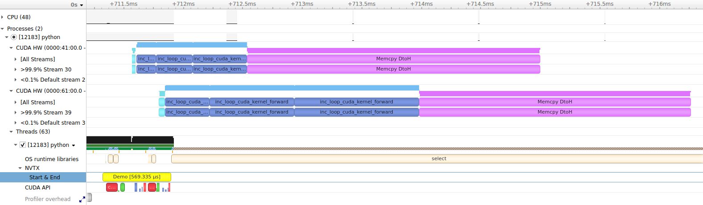
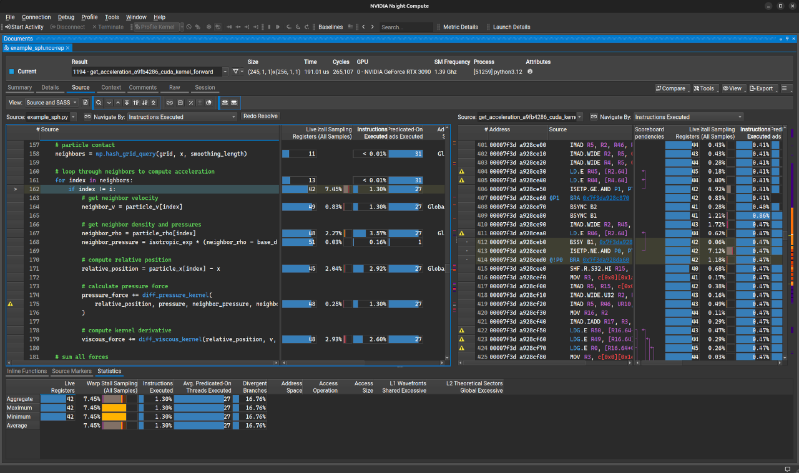

Profiling#
ScopedTimer#
ScopedTimer objects can be used to gain some basic insight into the performance of Warp applications:
@wp.kernel
def inc_loop(a: wp.array(dtype=float), num_iters: int):
i = wp.tid()
for j in range(num_iters):
a[i] += 1.0
n = 10_000_000
devices = wp.get_cuda_devices()
# pre-allocate host arrays for readback
host_arrays = [
wp.empty(n, dtype=float, device="cpu", pinned=True) for _ in devices
]
# code for profiling
with wp.ScopedTimer("Demo"):
for i, device in enumerate(devices):
a = wp.zeros(n, dtype=float, device=device)
wp.launch(inc_loop, dim=n, inputs=[a, 500], device=device)
wp.launch(inc_loop, dim=n, inputs=[a, 1000], device=device)
wp.launch(inc_loop, dim=n, inputs=[a, 1500], device=device)
wp.copy(host_arrays[i], a)
The only required argument for the ScopedTimer constructor is a string label,
which can be used to distinguish multiple timed code sections when reading the output.
The snippet above will print a message like this:
Demo took 0.52 ms
By default, ScopedTimer measures the elapsed time on the CPU and does not introduce any CUDA synchronization. Since most CUDA operations are asynchronous, the result does not include the time spent executing kernels and memory transfers on the CUDA device. It’s still a useful measurement, because it shows how long it took to schedule the CUDA operations on the CPU.
To get the total amount of time including the device executions time, create the ScopedTimer
with the synchronize=True flag.
This is equivalent to calling wp.synchronize() before and after the timed section of code.
Synchronizing at the beginning ensures that all prior CUDA work has completed prior to starting the timer.
Synchronizing at the end ensures that all timed work finishes before stopping the timer.
With the example above, the result might look like this:
Demo took 4.91 ms
The timing values will vary slightly from run to run and will depend on the system hardware and current load. The sample results presented here were obtained on a system with one RTX 4090 GPU, one RTX 3090 GPU, and an AMD Ryzen Threadripper Pro 5965WX CPU. For each GPU, the code allocates and initializes an array with 10 million floating point elements. It then launches the inc_loop kernel three times on the array. The kernel increments each array element a given number of times - 500, 1000, and 1500. Finally, the code copies the array contents to the CPU.
Profiling complex programs with many asynchronous and concurrent operations can be tricky.
Profiling tools like NVIDIA Nsight Systems can present the results
in a visual way and capture a plethora of timing information for deeper study.
For profiling tools capable of visualizing NVTX ranges, ScopedTimer can be created with the use_nvtx=True
argument.
This will mark the CPU execution range on the timeline for easier visual inspection.
The color can be customized using the color argument, as shown below:
with wp.ScopedTimer("Demo", use_nvtx=True, color="yellow"):
...
To use NVTX integration, you will need to install the NVIDIA NVTX Python package.
pip install nvtx
The package allows you to insert custom NVTX ranges into your code (nvtx.annotate) and customize the colors.
Here is what the demo code looks like in Nsight Systems (click to enlarge the image):
{kind=link}
There are a few noteworthy observations we can make from this capture. Scheduling and launching the work on the CPU takes about half a millisecond, as shown in the NVTX / Start & End row. This time also includes the allocation of arrays on both CUDA devices. We can see that the execution on each device is asynchronous with respect to the host, since CUDA operations start running before the yellow Demo NVTX range finishes. We can also see that the operations on different CUDA devices execute concurrently, including kernels and memory transfers. The kernels run faster on the first CUDA device (RTX 4090) than the second device (RTX 3090). Memory transfers take about the same time on each device. Using pinned CPU arrays for the transfer destinations allows the transfers to run asynchronously without involving the CPU.
Check out the concurrency documentation for more information about asynchronous operations.
Note that synchronization was not enabled in this run, so the NVTX range only spans the CPU operations used to schedule the CUDA work. When synchronization is enabled, the timer will wait for all CUDA work to complete, so the NVTX range will span the synchronization of both devices:
with wp.ScopedTimer("Demo", use_nvtx=True, color="yellow", synchronize=True):
...
{kind=link}
CUDA Activity Profiling#
ScopedTimer supports timing individual CUDA activities like kernels and memory operations.
This is done by measuring the time taken between CUDA events on the device.
To get information about CUDA activities, pass the cuda_filter argument to the ScopedTimer constructor.
The cuda_filter argument can be a bitwise combination of the following values:
Warp kernels (this includes all kernels written in Python as |
|
Builtin kernels (this includes kernels used by the Warp library under the hood) |
|
CUDA memory transfers (host-to-device, device-to-host, device-to-device, and peer-to-peer) |
|
CUDA memset operations (e.g., zeroing out memory in |
|
CUDA graph launches |
|
Combines all of the above for convenience. |
When a non-zero cuda_filter argument is specified, Warp will inject CUDA events for timing purposes and
report the results when the ScopedTimer finishes.
This adds some overhead to the code, so should be used only during profiling.
CUDA event timing resolution is about 0.5 microseconds. The reported execution time of short operations will likely be longer than the operations actually took on the device. This is due to the timing resolution and the overhead of added instrumentation code. For more precise analysis of short operations, a tool like Nsight Systems can report more accurate data.
Enabling CUDA profiling with the demo code can be done like this:
with wp.ScopedTimer("Demo", cuda_filter=wp.TIMING_ALL):
...
This adds additional information to the output:
CUDA timeline:
----------------+---------+------------------------
Time | Device | Activity
----------------+---------+------------------------
0.021504 ms | cuda:0 | memset
0.163840 ms | cuda:0 | forward kernel inc_loop
0.306176 ms | cuda:0 | forward kernel inc_loop
0.451584 ms | cuda:0 | forward kernel inc_loop
2.455520 ms | cuda:0 | memcpy DtoH
0.051200 ms | cuda:1 | memset
0.374784 ms | cuda:1 | forward kernel inc_loop
0.707584 ms | cuda:1 | forward kernel inc_loop
1.042432 ms | cuda:1 | forward kernel inc_loop
2.136096 ms | cuda:1 | memcpy DtoH
CUDA activity summary:
----------------+---------+------------------------
Total time | Count | Activity
----------------+---------+------------------------
0.072704 ms | 2 | memset
3.046400 ms | 6 | forward kernel inc_loop
4.591616 ms | 2 | memcpy DtoH
CUDA device summary:
----------------+---------+------------------------
Total time | Count | Device
----------------+---------+------------------------
3.398624 ms | 5 | cuda:0
4.312096 ms | 5 | cuda:1
Demo took 0.92 ms
The first section is the CUDA timeline, which lists all captured activities in issue order. We see a memset on device cuda:0, which corresponds to clearing the memory in wp.zeros(). This is followed by three launches of the inc_loop kernel on cuda:0 and a memory transfer from device to host issued by wp.copy(). The remaining entries repeat similar operations on device cuda:1.
The next section is the CUDA activity summary, which reports the cumulative time taken by each activity type. Here, the memsets, kernel launches, and memory transfer operations are grouped together. This is a good way to see where time is being spent overall. The memsets are quite fast. The inc_loop kernel launches took about three milliseconds of combined GPU time. The memory transfers took the longest, over four milliseconds.
The CUDA device summary shows the total time taken per device.
We see that device cuda:0 took about 3.4 ms to complete the tasks and device cuda:1 took about 4.3 ms.
This summary can be used to assess the workload distribution in multi-GPU applications.
The final line shows the time taken by the CPU, as with the default ScopedTimer options
(without synchronization in this case).
Customizing the output#
It is possible to customize how the activity timing results are reported.
The function warp.timing_print() is used by default.
To use a different reporting function, pass it as the report_func argument to ScopedTimer.
The custom report function should take a list of warp.TimingResult objects as the first argument.
Each result in the list corresponds to a single activity and the list represents the complete recorded timeline.
By manually traversing the list, you can customize the formatting of the output, apply custom sorting rules,
and aggregate the results as desired.
The second argument is a string indent that should be printed at the beginning of each line.
This is for compatibility with ScopedTimer indenting rules used with nested timers.
Here is an example of a custom reporting function, which aggregates the total time spend in forward and backward kernels:
def print_custom_report(results, indent=""):
forward_time = 0
backward_time = 0
for r in results:
# aggregate all forward kernels
if r.name.startswith("forward kernel"):
forward_time += r.elapsed
# aggregate all backward kernels
elif r.name.startswith("backward kernel"):
backward_time += r.elapsed
print(f"{indent}Forward kernels : {forward_time:.6f} ms")
print(f"{indent}Backward kernels : {backward_time:.6f} ms")
Let’s apply it to one of the Warp examples:
from warp.examples.optim.example_cloth_throw import Example
example = Example(None)
example.use_graph = False # disable graphs so we get timings for individual kernels
with wp.ScopedTimer("Example", cuda_filter=wp.TIMING_KERNEL, report_func=print_custom_report):
for iteration in range(5):
example.step()
This produces a report like this:
Forward kernels : 187.098367 ms
Backward kernels : 245.070177 ms
Using the activity timing functions directly#
It is also possible to capture activity timings without using the ScopedTimer at all.
Simply call warp.timing_begin() to start recording activity timings and
warp.timing_end() to stop and get a list of recorded activities.
You can use warp.timing_print() to print the default activity report or
generate your own report from the list of results.
wp.timing_begin(cuda_filter=wp.TIMING_ALL)
...
results = wp.timing_end()
wp.timing_print(results)
Limitations#
Currently, detailed activity timing is only available for CUDA devices, but support for CPU timing may be added in the future.
The activity profiling only records activities initiated using the Warp API. It does not capture CUDA activity initiated by other frameworks. A profiling tool like Nsight Systems can be used to examine whole program activities.
CUDA Events Timing#
CUDA events can be used for timing purposes outside of the ScopedTimer. Here is an example:
with wp.ScopedDevice("cuda:0") as device:
# ensure the module is loaded
wp.load_module(device=device)
# create events with enabled timing
e1 = wp.Event(enable_timing=True)
e2 = wp.Event(enable_timing=True)
n = 10000000
# start timing...
wp.record_event(e1)
a = wp.zeros(n, dtype=float)
wp.launch(inc, dim=n, inputs=[a])
# ...end timing
wp.record_event(e2)
# get elapsed time between the two events
elapsed = wp.get_event_elapsed_time(e1, e2)
print(elapsed)
The events must be created with the flag enable_timing=True.
The first event is recorded at the start of the timed code and the second event is recorded at the end.
The function warp.get_event_elapsed_time() is used to compute the time difference between the two events.
We must ensure that both events have completed on the device before calling warp.get_event_elapsed_time().
By default, this function will synchronize on the second event using warp.synchronize_event().
If that is not desired, the user may pass the synchronize=False flag and must use some other means of ensuring that both events have completed prior to calling the function.
Note that timing very short operations may yield inflated results, due to the timing resolution of CUDA events and the overhead of the profiling code.
In most cases, CUDA activity profiling with ScopedTimer will have less overhead and better precision.
For the most accurate results, a profiling tool such as NVIDIA Nsight Systems should be used.
The main benefit of using the manual event timing API is that it allows timing arbitrary sections of code rather than individual activities.
Timing in CUDA Graphs#
Events created with the enable_timing=True flag can be used for timing inside of CUDA graphs. We record the events during graph capture as usual, but the timings won’t be available until the graph is launched and synchronized.
with wp.ScopedDevice("cuda:0") as device:
# ensure the module is loaded
wp.load_module(device=device)
# create events with enabled timing
e1 = wp.Event(enable_timing=True)
e2 = wp.Event(enable_timing=True)
n = 10000000
# begin graph capture
with wp.ScopedCapture() as capture:
# start timing...
wp.record_event(e1)
a = wp.zeros(n, dtype=float)
wp.launch(inc, dim=n, inputs=[a])
# ...end timing
wp.record_event(e2)
# launch the graph
wp.capture_launch(capture.graph)
# get elapsed time between the two events during the launch
elapsed = wp.get_event_elapsed_time(e1, e2)
print(elapsed)
Nsight Compute Profiling#
While Nsight Systems provides a system-wide visualization of software and hardware activity for an application, Nsight Compute can be used for detailed CUDA kernel performance analysis. A possible workflow cycle might consist of the following steps:
Use Nsight Systems to identify the most time-consuming kernels.
Use Nsight Compute to profile just a few executions of the kernels identified in the previous step to obtain detailed recommendations for optimization actions.
Re-check the overall performance by repeating the cycle.
Before profiling kernels with Nsight Compute, it is important that the module(s) containing the kernels of interest
are compiled with line information. This can be set at a global level by using the warp.config.lineinfo setting
or on a per-module basis using the lineinfo flag (see Module Settings),
e.g. wp.set_module_options({"lineinfo": True}).
This allows Nsight Compute to correlate assembly (SASS) with high-level Python or CUDA-C code at the expense of
larger files in the kernel cache (approximately double the file size without line information).
Elevated application privileges may be required to access the necessary hardware counters to profile kernels with Nsight Compute (Instructions)
Nsight Compute can be run as an interactive profiler and as a command-line profiler. The command-line profiler can store
reports in a file that can be opened later with the UI executable (ncu-ui).
Source code correlation options#
By default, Warp emits line directives in the CUDA-C code that help correlate SASS instructions with the Python
Warp kernel or function code that produced it. This can sometimes complicate the analysis of data in Nsight Compute as
one line of Python code might be correlated to tens or hundreds of SASS instructions.
It can sometimes be helpful to correlate SASS instructions directly with CUDA-C source code in the kernel cache
by setting warp.config.line_directives to False. Comments in the CUDA-C code indicate the Python
code that produced it.
Example: Profiling kernels from example_sph.py#
First, we need to modify the example to compile with line information.
import numpy as np
import warp as wp
import warp.render
wp.config.lineinfo = True
Rather than profiling the full example in Nsight Systems, we decide to profile the first 10 frames of the simulation and also skip writing particle positions to a USD file so that we can focus on the GPU-related optimizations:
nsys profile --stats=true python example_sph.py --stage_path None --num_frames 10
The output tells us that the get_acceleration and the compute_density kernels take up the majority of the
time on the GPU. We also see from the output that their full names become
get_acceleration_a9fb4286_cuda_kernel_forward and compute_density_99e58138_cuda_kernel_forward, but the exact
names may vary between different systems and Warp versions.
Next, we use Nsight Compute to profile the kernels. Let’s focus on the get_acceleration kernel first.
A basic command to use the command-line profiler to save the report to example_sph.ncu-rep is:
ncu -o example_sph -k get_acceleration_a9fb4286_cuda_kernel_forward --set full python example_sph.py --stage_path None --num_frames 10
This command takes a much longer time to execute than the Nsight Systems command since Nsight Compute performs
multiple passes of each kernel launch to collect different metrics.
To speed up the profiling, we can use the -c [ --launch-count ] arg option to limit the number of collected profile
results:
ncu -o example_sph -k get_acceleration_a9fb4286_cuda_kernel_forward --set full -c 5 python example_sph.py --stage_path None --num_frames 10
Additionally, we can add the -f option to overwrite the output file and --open-in-ui to automatically open the
report in the UI:
ncu --open-in-ui -f -o example_sph -k get_acceleration_a9fb4286_cuda_kernel_forward --set full -c 5 python example_sph.py --stage_path None --num_frames 10
The following screenshot shows the Python/SASS correlation view from the Nsight Compute report (click to enlarge):
{kind=link}
Please consult the Nsight Compute User Guide for more information on how to navigate the report in the UI. If the source comparison window only shows low-level SASS code, it is likely that the modules were not compiled with line information.
We can profile the compute_density kernel in a similar manner by changing the kernel name in the command to
compute_density_99e58138_cuda_kernel_forward.
Profiling all kernels in an application#
In the previous example, we used the -k option to selectively profile the most time-consuming kernels according
to the Nsight Systems analysis. If we simply wanted to profile the first 20 kernel launches in the application,
we can drop the -k option and increase the value of the -c option to 20:
ncu --open-in-ui -f -o example_sph --set full -c 20 python example_sph.py --stage_path None --num_frames 10
Preserving source code context in Nsight Compute reports#
It is convenient to permanently import the Python or CUDA-C source files into the report by using the
-import-source 1 option when running ncu, e.g.
ncu --open-in-ui --import-source 1 -f -o example_sph -k get_acceleration_a9fb4286_cuda_kernel_forward --set full -c 5 python example_sph.py --stage_path None --num_frames 10
This ensures that a snapshot of the source files is taken at the time the profiling report was created,
which prevents subsequent source-code modifications from affecting the SASS/source correlation information.
For example, adding a single-line comment line to the top of
example_sph.py after running the profiling command will make the Python/SASS correlation in Nsight Compute incorrect
by one line if the source files were not imported into the report.
The --source-folders arg option is also required to tell Nsight Compute which directories to search for the source
files to import into the report when the profiling command is not run from the same directory as the source files.
This is typically true when profiling with CUDA-C/SASS correlation (warp.config.line_directives set to
False), unless warp.config.kernel_cache_dir has been set to the current working directory. An example
profiling command that directs Nsight Compute to search for the source files in kernel cache directory on Linux is:
ncu --open-in-ui --import-source 1 --source-folders ~/.cache/warp/ -f -o example_sph -k get_acceleration_a9fb4286_cuda_kernel_forward --set full -c 5 python example_sph.py --stage_path None --num_frames 10
For similar reasons, it may sometimes be necessary to clear the kernel cache using warp.clear_kernel_cache()
to force an update of the #line directives added into the CUDA-C code. This is because there can be changes to
Python source files that do not affect the module hash but make the line-correlation information incorrect.
Profiling Module Compilation#
Versions of Warp built with at least CUDA 12.8 support the generation of Trace Event Format files when compiling modules for the GPU. This feature can be used to identify bottlenecks in the runtime compilation process.
By setting the global configuration option warp.config.compile_time_trace to True,
an additional JSON file with the suffix _compile-time-trace.json will be
generated in the corresponding kernel cache directory (see warp.config.kernel_cache_dir)
when modules are compiled. This file can be opened in a viewer like a Chronium browser’s built in
profiler (e.g. chrome://tracing/ or edge://tracing/) or the Perfetto UI.
For more information about profiling the compilation process, see the NVIDIA Developer blog post Optimizing Compile Times for CUDA C++.